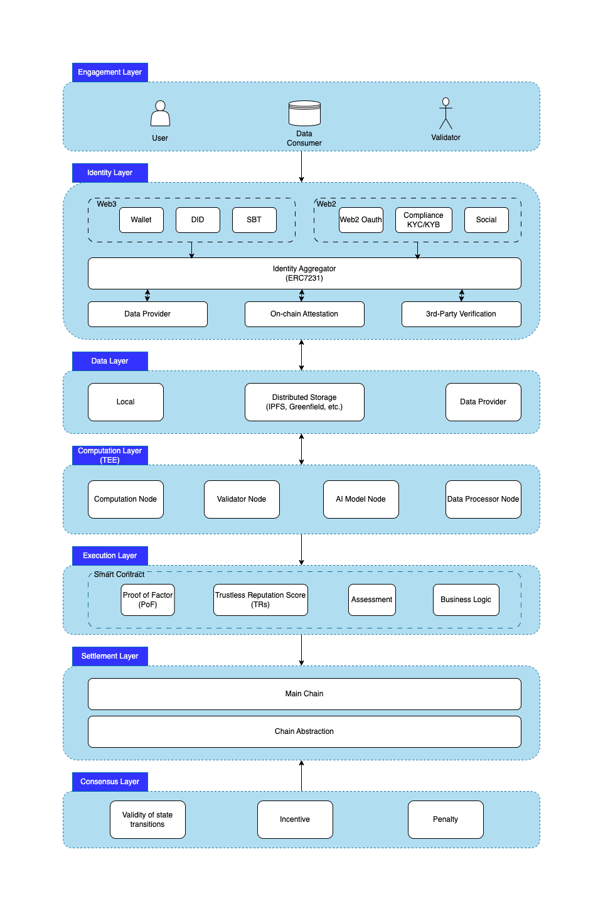

The Trustless Reputation System Architecture Design#
High-Level Architecture#
The Trustless Reputation system (TRs) architecture is designed in a modular architecture with lots of benefits along the way such as flexibility, scalability, reusability, and maintainability based on layered architecture.
The TRs is divided into 7 layers. Each of these is broken down into smaller units or components following the same architecture:
-
Engagement Layer: An entry point for all parties
-
Identity Layer: universal identity for both Web2 and Web3
-
Data Layer: users' data stored by themselves or other parties such as data providers, IPFS, etc.
-
Computation Layer (TEE): off-chain trusted computation environment
-
Execution Layer: The layer where transactions and state changes are initially processed
-
Settlement Layer: The layer where the execution of transactions is verified and disputes are resolved
-
Consensus Layer: all full nodes reach a consensus on the validity of state transitions

Layer Design#
Engagement Layer#
The engagement layer is a crucial component of software architecture that focuses on creating a seamless and interactive user experience. It serves as the interface between the user and the system, enabling effective communication, decision-making, and task accomplishment. The engagement layer is responsible for presenting information, facilitating user input, and providing feedback, ultimately driving user engagement and adoption.
Goals of the Engagement Layer:
- Improve User Adoption: Make the system easy to use, reducing barriers to entry and increasing user acceptance.
- Enhance User Experience: Create an engaging, intuitive, and responsive interface that delights users and encourages continued use.
- Increase Productivity: Streamline workflows, simplify tasks, and provide efficient tools to maximize user productivity.
- Provide Personalization: Tailor the experience to individual users' needs, preferences, and behaviors.
- Foster Engagement: Encourage users to interact with the system, explore its features, and derive value from it.
There are 3 major parties in the engagement layer:
-
User: typical user
-
Data Consumer and Data Provider: A data consumer is an individual, system, organization, or entity that receives or utilizes data in order to perform specific tasks or make decisions. Data consumers can be internal entities within an organization, such as data analysts and business intelligence teams, or external entities, such as customers, partners, or regulatory bodies.
A data provider is any entity that organizes and provides access to various users’ types of data on behalf of users’ permission. Data providers can be from Web2 or Web3 such as Bank, Social Media, Indexer, Cloud Storage, Data Availability, etc.
-
Validator: A validator is a person or program that checks the accuracy, completeness, and consistency of data. Beyond validating the user’s source of truth in terms of reputation, validators reach a consensus on the validity of state transitions.
Identity Layer#
According to the Zero Trust Architecture, the identity Layer refers to the component or module responsible for managing and verifying the identity of users, devices, or systems. This layer is critical in ensuring secure authentication, authorization, and access control.
The Identity Layer typically performs the following functions:
- Identity management: Managing user identities, including creation, deletion, and modification.
- Authentication: Verifying the identity of users, devices, or systems through various authentication mechanisms (e.g., passwords, biometrics, tokens).
- Authorization: Determining the access levels and permissions for authenticated entities.
- Account management: Managing user accounts, including account provisioning and source of truth about users.
Each entity owns an identity-aggregated NFT which is the individual-authenticated aggregation of web2 and web3 identities to NFTs (SBTs included). By binding multiple identities, aggregated and compossible identity information can be verified, resulting in more beneficial on-chain scenarios for individuals, such as self-authentication, social overlapping, commercial value generation from user targeting, etc.
Data Layer#
In a trustless reputation system, the data layer is a fundamental component that ensures the integrity, availability, and verifiability of the reputation data across a decentralized network. A trustless environment operates without the need for a central authority or trusted intermediary, relying instead on cryptographic techniques and decentralized consensus mechanisms to secure and validate transactions and interactions. Here's how the data layer in a trustless reputation system typically functions:
-
Decentralized Storage: Reputation data is stored across multiple nodes in the network, often using distributed ledger technology like blockchain. This ensures that the data is not controlled by any single entity and is resilient to censorship, downtime, and data loss.
-
Immutable Records: Once reputation data is recorded on the blockchain, it becomes immutable. This means it cannot be altered or deleted without the consensus of the network, which provides an audit trail and historical record of reputation scores.
-
Transparent and Verifiable: All participants in the network can access and verify the reputation data. The transparency of the system allows users to trust the outcomes without relying on a third party. Verifiability ensures that users can independently check the validity of the reputation information.
-
Smart Contracts: Reputation logic can be encoded into smart contracts, which automatically execute reputation-related actions or transactions without the need for intermediaries. For example, a smart contract might release funds to a service provider after verification of successful service delivery, based on their reputation score.
-
Consensus Mechanisms: The network uses consensus algorithms to agree on the state of the reputation data. This ensures that all nodes have a synchronized view of the system, which is essential for maintaining a consistent and reliable reputation score.
-
Incentive Mechanisms: To encourage honest participation and discourage malicious behavior, the system typically includes incentives for users who contribute to the reputation data layer. This can include rewarding node operators who maintain the network, participants who provide honest reviews, or those who identify and report fraudulent activity.
-
Data Privacy: While transparency is important, privacy considerations must also be addressed. Reputation systems often anonymize user data to protect the privacy of individuals while still allowing for the assessment of their reputational score.
-
Data Integrity: Cryptographic techniques such as hash functions and digital signatures are used to ensure that reputation data has not been tampered with. These techniques allow nodes to detect and reject any altered or corrupted data.
-
Real-time Updates: The system may support real-time updates to reputation scores, allowing for dynamic and responsive reputation assessment. It is critical for users to make informed decisions based on the latest data.
-
Scalability: To handle a large number of transactions and reputation assessments, the data layer must be scalable. Technologies like sharding, layer 2 solutions, or sidechains can help to increase the capacity of the system.
-
Interoperability: For a trustless reputation system to be widely adopted, it should be interoperable with other systems and blockchains. This allows for a broader range of uses and the integration of various services and applications.
-
Governance: A clear governance framework is needed to manage changes to the reputation system and resolve disputes. This is typically achieved through decentralized autonomous organizations (DAOs) or similar structures where stakeholders can propose and vote on decisions.
Computation Layer (TEE):#
A Trusted Execution Environment (TEE) is a secure area of a device's processor that provides a protected environment for running sensitive code and processing sensitive data. It ensures that the code and data within the TEE are isolated from the rest of the device, making it difficult for unauthorized parties to access or tamper with them.
Key components of a TEE include:
- Secure memory: A TEE provides a separate memory space for storing sensitive data, which is isolated from the device's main memory.
- Secure processor: A TEE uses a dedicated processor or a special mode of the main processor to execute sensitive code. This prevents unauthorized access or tampering with the code while it's being executed.
- Security algorithms: A TEE uses cryptographic algorithms to protect data and code within a secure environment. This includes techniques such as encryption, authentication, and secure key management.
- Access control: A TEE implements strict access control policies to ensure that only authorized apps and users can access the secure environment and its resources.
A computation layer, also known as a computational layer, is a logical layer in a software or systems architecture that is responsible for performing computations or processing tasks. It typically sits above lower-level layers that handle input/output and data storage, and above higher-level layers that provide a user interface or handle application-specific logic.
The computation layer can include a variety of components, such as:
- Mathematical libraries: for performing mathematical operations and algorithms.
- Data processing modules: for cleaning, transforming, and otherwise processing data.
- Machine learning algorithms: for making predictions or classifications based on data.
- Simulation and modeling tools: for simulating or modeling real-world systems or processes.
Execution Layer#
The execution layer serves a critical role in ensuring that transactions and interactions are conducted securely and fairly without the need for a trusted third party. Here's how this type of execution layer typically works and functions.
Key Components and Features:
-
Smart Contracts: These are self-executing contracts with the terms of the agreement directly written into code. They run on the blockchain and automatically enforce and execute the terms of a trustless agreement when predetermined conditions are met.
-
Consensus Mechanisms: The execution layer uses consensus algorithms to validate transactions and agreements across the network, making sure that all participants agree on the state of the system.
-
Namespace and Identity Management: To foster trustless interactions, the execution layer must accurately verify and manage identities or pseudonyms of the participants without revealing personal identifying information.
-
Economic Incentives: Since there is no central authority, the execution layer must incorporate mechanisms to incentivize honest behavior and penalize dishonesty (e.g., through token rewards for positive contributions and slashing for malicious activities).
-
Decentralized Storage: A robust execution layer ensures that data is stored across the network to prevent tampering and censorship, often using technologies like the IPFS.
-
Oracles Integration: To interact with external data, the execution layer may include oracles—trusted nodes or decentralized services that provide verified data to smart contracts.
-
Event Handling and Triggering: The event system in the execution layer notifies participants or smart contracts when certain actions or transactions occur, ensuring timely and relevant automated responses within the system.
-
Validation and Execution of Transactions: The execution layer validates incoming transactions according to the network's rules and executes them if they are correct, updating the network's distributed ledger accordingly.
-
Reputation Algorithms: These algorithms calculate and manage the trust scores of participants based on their behavior and interactions within the network. They are key in maintaining a healthy and trust-based ecosystem on the platform.
-
Peer Verification: Peers in the network frequently perform checks on each other's behavior, such as completing tasks or maintaining service levels, contributing to the overall trustworthiness of the network.
Settlement Layer#
A settlement layer is a mechanism that facilitates the resolution of disputes and the settlement of transactions in a trustless reputation system. It's a layer that sits on top of the underlying reputation system, providing a way to resolve conflicts and update reputation scores in a fair and transparent manner.
Key functions of a settlement layer:
- Dispute resolution: The settlement layer provides a mechanism for resolving disputes between parties in the reputation system. This can include resolving conflicts related to reputation scores, transaction outcomes, or other issues that may arise.
- Reputation score updates: The settlement layer is responsible for updating reputation scores based on the outcome of disputes or transactions. This ensures that reputation scores accurately reflect the behavior and performance of entities in the system.
- Incentivization: The settlement layer can provide incentives for entities to behave honestly and maintain a good reputation. For example, entities with high reputation scores may receive rewards or benefits, while those with low scores may face penalties.
- Security and trust: The settlement layer ensures the security and trustworthiness of the reputation system by providing a decentralized and transparent mechanism for resolving disputes and updating reputation scores.
Design considerations for a settlement layer:
- Decentralization: The settlement layer should be decentralized to prevent any single entity from controlling the resolution of disputes or the updating of reputation scores.
- Transparency: The settlement layer should provide transparent and auditable records of all disputes and reputation score updates.
- Fairness: The settlement layer should ensure that disputes are resolved fairly and impartially, without bias towards any particular entity.
- Scalability: The settlement layer should be designed to handle a large volume of disputes and reputation score updates efficiently.
- Incentive alignment: The settlement layer should be designed to align incentives with honest behavior, ensuring that entities are motivated to maintain a good reputation.
Consensus Layer#
In a trustless reputation system, a consensus layer plays a crucial role in achieving consensus among different nodes or participants, despite the absence of a central authority. This is achieved through a consensus mechanism, which ensures all participants agree on the state and validity of transactions or information. Here's a brief overview of how the consensus layer works in a trustless reputation system:
-
Transaction Proposal: A user initiates a transaction, such as posting a review or rating, that needs to be added to the system.
-
Validation: Following the proposal, nodes validate the genuineness and legitimacy of the transaction, checking for potential fraud, spam, or other malicious activities.
-
Reputation Calculation: Once the transaction is deemed valid, each node in the system calculates the reputation scores for the involved parties based on their history of interactions, the number of reviews, and the overall ratings received. This reputation score reflects the trustworthiness of the users.
-
Consensus Mechanism: After calculating the reputation scores, nodes employ a consensus mechanism to agree on the updated state of the system, including the reputation scores and the transaction itself. In a trustless reputation system, common consensus mechanisms include Proof of Work (PoW), Proof of Stake (PoS), and Byzantine Fault Tolerance (BFT).
-
Record Update: Once a consensus is reached, the new transaction (with the updated reputation scores) is added to the system, and all nodes are updated accordingly. This process is transparent, immutable, and maintains the integrity of the trustless reputation system.
-
Reward Distribution: To incentivize participants and prevent malicious behaviors, some consensus mechanisms (e.g., PoS and DPoS) typically distribute rewards to nodes that contribute to maintaining the security and integrity of the system.